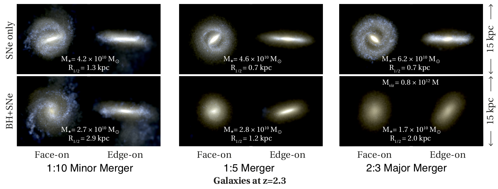
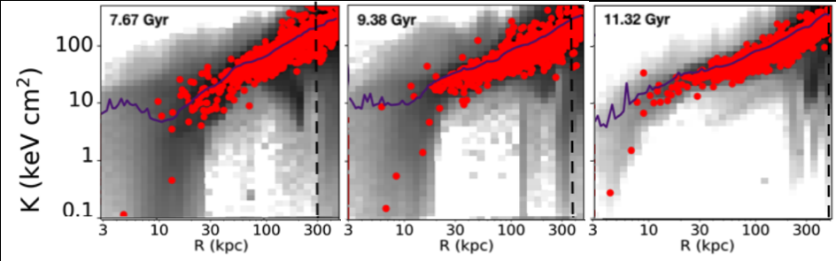

{kind=link}
Overview
Empirical relations between the mass of black holes and the properties (mass, velocity dispersion) of their host galaxies imply that their evolution is connected. For massive galaxies, it is also thought that energy released by growing SMBHs can be an important ingredient in regulating star formation and, in some cases, stopping star formation entirely. However, there is still much we don't understand about how black holes grow and the nature of AGN feedback. When growing a SMBH, shining as active galactic nuclei, regulate star formation by injecting energy into its surroundings The reservoir of material available for SMBHs to consume is likely regulated by its host galaxy, but also by its own feedback disrupting its nearby gas supply. What processes drive and regulate black hole growth? Where and when does AGN feedback quench - or shut down completely - star formation?
An Interesting Relationship With Star Formation
By examining black hole growth across thousands of galaxies throughout cosmic time in the Romulus simulations, we were able to predict that black hole growth is closely related to star formation, meaning that galaxies and black holes tend to grow together. While this agrees with some observations, we also found very little correlation with merger events which is surprising. It also complicates the question of black hole feedback. If black holes grow (on average) symbiotically with their host galaxy, why does star formation sometimes shut down? It is likely there are multiple important processes at play. {kind=link}
Connecting SMBH Activity to Galaxy Assembly History
The way in which black holes grow and interact with their host galaxy may also depend on how their host galaxy forms over time. Using a series of zoom-in simulations, we were able to test how black holes and galaxy mergers conspire to quench star formation. Utilizing the Genetic Modification technique, we took a massive galaxy and manipulated the mass ratio of its most recent merger. Without SMBHs, this does little to change the overall evolution of the galaxy. However, when we do include SMBHs, the simulation with the more major merger quenches entirely while the minor merger version remained star forming. While the black hole growth remained nearly the same in all simulations, when the galaxy's gas become more disrupted during the more major mergers it was able to drive larger, more energetic outflows (see side panel for more).
Our group continues this work using the Genetic Modification approach to create controlled experiments to test the influence of assembly history on SMBH-Galaxy Co-evolution. In addition to merger histories, we can manipulate the formation time of the galaxy and its angular momentum. Not only are we able to attain higher resolution in these simulations, but this approach is uniquely able to isolate important properties of a galaxy's assembly history and connect it with its evolution (and that of its SMBH).
{kind=link}
A Relatively Gentle Process
How are these SMBH-driven outflows able to stop star formation? In both Tremmel et al. 2019 and Chadayammuri et al 2021 we find that prolonged periods of strong outflow activity is associated with the shutdown of star formation. These powerful outflows don't significantly disrupt the galaxy itself, but rather they affect the ability for gas on larger scales to cool and fall onto the galaxy. This relatively gentle process is able to shut off the galaxy's supply of gas without significant disruption. The gas within or near the galaxy is not super heated, nor is it blown away.
Testing New Models for Black Hole Feedback
Despite its importance, we understand very little about the physics of AGN feedback. How do SMBHs transfer energy to surrounding gas and how is this connected to the properties of the black holes themselves, such as their growth rate, mass, and spin? Such an open-ended problem means we have plenty of room to experiment with new models, which we develop in our group and then test with high resolution simulations and controlled experiments. Utilizing Genetic Modification, we can explore how changing models for feedback results in different interactions with a galaxy's assembly history.